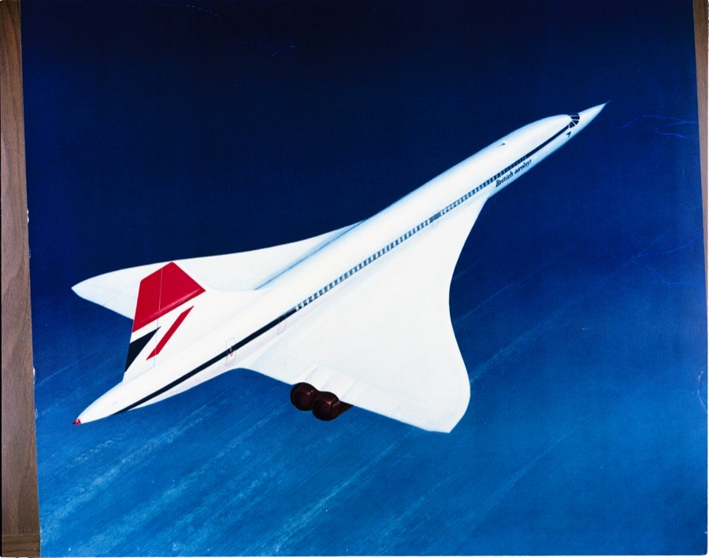
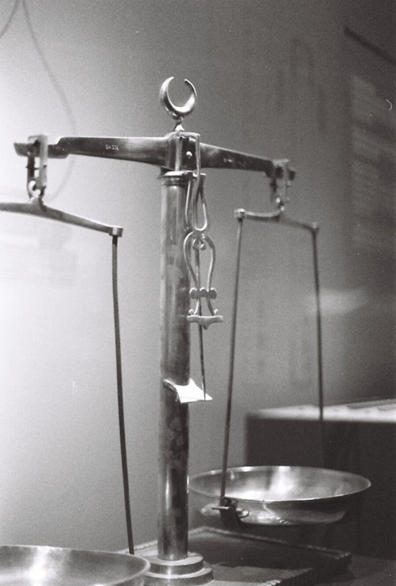

認知バイアス
すでに払った代償が、まだ続ける理由になる。経済学が「無視せよ」と言い、心理学が「無視できない」と証明したもの——サンクコスト錯誤の正体。
Hal R. ArkesとCatherine Blumerが「The Psychology of Sunk Cost」を発表。回収不能な投資が判断を歪める心理を実験で実証した。
同年、Live Aidコンサートがロンドンとフィラデルフィアで同時開催。レーガン米大統領とゴルバチョフ書記長がジュネーヴで初会談した。
別名: コンコルドの誤謬。1976年にリチャード・ドーキンスとタムジン・カーライルが動物行動学の文脈で同じ構造の誤りを指摘し、開発費を回収できないまま飛び続けた超音速旅客機にちなんで名付けた。
映画館で30分。画面の中では退屈な場面が続いている。席を立ちたい。でも1,800円払ったのだから、もう少しだけ——そう思って座り続けたことが、一度はあるだろう。
これは映画に限った話ではない。3年続けたプロジェクト、10年通ったジム、ずっと読み進めてきた難解な本。投じた時間やお金や労力が重しになって、「いま引き返すのは損だ」と感じる。引き返したほうが合理的であっても。
すでに支払ったコストは、もう戻らない。にもかかわらず、それが次の判断を支配する。この記事は、その錯誤の正体を探る。
「もったいない」という感情が合理的な判断をどう妨げるかを、自分の選択を通じて体験する。日常の意思決定に潜む見えない重力を知る記事。
この記事は「もったいない」の話だが、その前にひとつだけ確認しておきたい。私たちが何かを「もったいない」と感じるとき、それは判断なのか、それとも感情なのか。
たとえば、あなたが高級レストランで食べ放題のコースを注文したとする。すでに十分に食べた。腹は苦しい。でも「元を取りたい」と思って、さらにデザートを頼む。お腹の状態からすれば、やめたほうがいい。それでも注文してしまうのは、すでに支払った金額を「まだ回収していない」と感じているからだ。
経済学では、この「すでに支払って取り戻せないコスト」をサンクコスト（sunk cost＝埋没費用）と呼ぶ。そして合理的な意思決定においては、サンクコストは無視すべきだとされている。なぜなら、どの選択をしても、そのコストはもう変わらないからだ。映画を観続けても途中で帰っても、1,800円は戻らない。であれば、「残りの時間をどう使えば一番満足できるか」だけを考えればいい。
"The sunk cost effect is manifested in a greater tendency to continue an endeavor once an investment in money, effort, or time has been made."
「サンクコスト効果は、金銭・努力・時間の投資がなされたあと、その取り組みを継続しようとする傾向が強まることに表れる。」
— Hal R. Arkes & Catherine Blumer, "The Psychology of Sunk Cost" (1985)
ところが、人間はこの「無視せよ」がどうしてもできない。そして「無視できずに非合理的な判断をしてしまうこと」を、心理学では錯誤錯誤（fallacy）
論理的・認知的な誤り。サンクコスト錯誤の場合、「回収不能なコストを判断材料に含めてしまう」という体系的な推論の誤りを指す。知識で防げるとは限らない点が単なる「間違い」とは異なる。と呼ぶ。Hal R. Arkesハル・アーケス（Hal R. Arkes）
アメリカの心理学者。オハイオ大学教授を経てオハイオ州立大学。意思決定の非合理性を実験的に研究。とCatherine Blumerキャサリン・ブルーマー（Catherine Blumer）
心理学者。Arkesとともにサンクコスト効果の実験的研究を行い、1985年の論文の共著者。が1985年に発表した論文は、このことを美しいほど明快に証明した。
Hal R. Arkes
Psychologist
「劇場チケット実験」をはじめとする一連の実験で、サンクコスト錯誤が金銭だけでなく時間や労力にも及ぶことを体系的に示した。「人間は無駄に見えることを避けたいという社会規範に従っている」と分析。
Arkesらの実験のなかでもっとも有名なのが、オハイオ大学のキャンパス劇場で行われたフィールド実験だ。シーズンチケットの購入者をランダムに3グループに分け、定価で購入したグループ、2ドル割引のグループ、7ドル割引のグループを作った。チケットの内容は同じ。上演されるのも同じ演目。違うのは、支払った金額だけだ。
| グループ | 支払額 | シーズン前半の平均観劇回数 |
|---|---|---|
| 定価購入 | $15 | 4.11回 |
| $2 割引 | $13 | 約3.3回 |
| $7 割引 | $8 | 約3.3回 |
結果は明白だった。定価で買った人は、割引で買った人より多くの公演に足を運んだ。全員が同じ演目を観る権利を持っていたにもかかわらず。多く払った人は「元を取る」ために劇場に通い、安く手に入れた人はそうしなかった。つまり、過去の支出が未来の行動を支配していた。
✗ よくある誤解
サンクコスト錯誤は「お金」の問題であり、お金が絡まなければ起きない
✓ 実際は
時間・労力・感情の投資でも同じ構造で起きる。3年付き合った恋人と別れられないのも、10年勤めた会社を辞められないのも、同じメカニズム
✗ よくある誤解
「もったいない精神」は美徳であり、サンクコストを考慮するのは合理的だ
✓ 実際は
無駄を避ける姿勢は事前には有用だが、コストが回収不能になった後に適用すると判断を歪める。「払った分を取り戻す」という考え自体が罠になる
✗ よくある誤解
サンクコスト錯誤を知っていれば回避できる
✓ 実際は
経済学の教育を受けた人でも同じ傾向を示すことが実験で確認されている。知識だけでは感情を制御できない
ここで、Arkesらの実験で使われた有名なシナリオを体験してみてほしい。正解・不正解があるわけではない。自分の直感がどう動くかを観察することに意味がある。
あなたはミシガンへのスキー旅行のチケットを10万円で購入した。数週間後、ウィスコンシンへの別のスキー旅行のチケットを5万円で購入した。よく考えると、ウィスコンシンの旅行のほうが楽しそうだと思う。ところが、あとになって気づいた——2つの旅行は同じ週末にかぶっている。どちらのチケットも払い戻しも譲渡もできない。
あなたはどちらの旅行に行くか？
Arkesらの実験では、過半数の参加者が「ミシガン旅行（高いほう）」を選んだ。理由は明快だ——10万円を「無駄にしたくない」から。しかし考えてみてほしい。どちらを選んでも、15万円はもう戻らない。であれば、「これからの時間をどちらに使えば楽しいか」だけが問題のはずだ。ウィスコンシンのほうが楽しいと自分で思っているのに、過去に多く払ったほうを選ぶ。これがサンクコスト錯誤の典型的な姿だ。
あなたは航空会社の意思決定者だ。レーダーに映らないステルス飛行機を製造するプロジェクトに、すでに900万ドルを投じてきた。プロジェクトの完成まであと100万ドル。ところが最近、別の会社がすでに同等の性能を持つステルス飛行機を完成させ、しかもあなたの会社のものより性能が良いことがわかった。
残りの100万ドルを投じてプロジェクトを完成させるか？
Arkesらの実験では、サンクコスト（900万ドルの既投資額）が提示されたグループの85%が「完成させる」と答えた。一方、サンクコストの情報なしに同じプロジェクトを評価させたグループでは、投資を支持したのはわずか10%程度だった。同じプロジェクトなのに、「すでに投じた金額」を知っているかどうかで、判断がここまで変わる。
サンクコストの大きさが判断にどう影響するかを確認しよう。スライダーを動かして「すでに投じた金額」を変化させると、研究から推定される「継続を選ぶ人の割合」が変わる。
投資額 500万円 → 継続を選ぶ人の推定割合: 56%
過半数が「ここまで来たのだから」と継続を選ぶ水準だ。
"Sunk costs are sunk."
「埋没費用は、埋没している。」
— 経済学の基本原則。にもかかわらず、人間はこの原則を体系的に破る。
なぜ人間はサンクコストを無視できないのか。研究者たちはいくつかのメカニズムを指摘している。興味深いのは、これが単なる「計算ミス」ではなく、人間が社会の中で生きるために身につけた規範の副作用だという点だ。
サンクコスト錯誤のメカニズム
Arkesらは、サンクコスト錯誤の根底にあるのは「無駄に見えることを避けたい」という社会規範の過剰適用だと論じた。子どものころから「出されたものは残さず食べなさい」「買ったものは大事に使いなさい」と言われて育つ。この規範自体は有用だが、コストがすでに回収不能になった場面でも適用されてしまうところに問題がある。興味深いことに、幼い子どもはサンクコスト錯誤を示しにくく、大人になるにつれて強くなる。規範の「学習」が錯誤を生む。
損失の心理的痛みは、同じ大きさの利得から得られる喜びの約2倍。これがKahnemanとTverskyのプロスペクト理論の核心だ。サンクコストを「損失」として認識してしまうと、その痛みを解消するために「続ける」ことを選んでしまう。中止すれば損失が確定する。続ければ、まだ取り戻せるかもしれない。この「損失を確定させたくない」という強い衝動が、非合理的な継続の原動力になる。
Barry Stawは1976年の論文で、自分が責任を負っている判断について、悪い結果が出たときほど追加投資を増やすことを示した。自分の過去の判断を「間違いだった」と認めることには心理的コストがかかる。だから、追加投資をして「最終的にはうまくいった」というストーリーを作ろうとする。組織のなかでは、この傾向がさらに強まる。責任者が「あの判断は間違いだった」と言うのは、キャリアにとって危険だからだ。
Richard Thalerが提唱した心理会計は、人間がお金を目的別の「心の中の口座」に分けて管理しているという理論だ。映画のチケット代は「映画口座」に記帳され、映画を観ることでその口座が「閉じる」。チケットを使わずに帰ると、口座は赤字のまま閉じられない。この未決済の口座が心理的な不快感を生む。だから、たとえ退屈な映画でも最後まで観て口座を閉じたがる。
4つのメカニズムは互いに独立ではなく、同時に働いて判断を歪める。「もったいない」（規範）と「損したくない」（損失回避）と「間違えたと思いたくない」（自己正当化）と「口座を閉じたい」（心理会計）が束になって、私たちを非合理的な継続へと押しやる。
サンクコスト錯誤の研究史は、異なる分野の研究者たちが、別々の角度から同じ現象に気づいた歴史でもある。
サンクコスト研究の主な業績 関連する出来事
1976
「コンコルドの誤謬」命名
動物行動学者リチャード・ドーキンスと学生タムジン・カーライルが、Nature誌に論文を発表。動物の親子関係における投資判断の誤りを指摘し、超音速旅客機コンコルドの開発にちなんで命名した。
1976
エスカレーション・オブ・コミットメント
Barry Stawが「Knee-Deep in the Big Muddy」を発表。自分が責任を負う判断が裏目に出たとき、人はさらに資源を投入する傾向があることを実証した。
1979
プロスペクト理論
KahnemanとTverskyがEconometrica誌に発表。損失回避の概念を確立し、サンクコスト錯誤を説明する理論的基盤を提供した。
1980
Richard Thalerが「サンクコスト効果」を命名
Thalerの論文「Toward a Positive Theory of Consumer Choice」で、吹雪の夜にバスケットボールの試合に行く例を用い、消費者が過去の支出に引きずられる現象を「サンクコスト効果」と呼んだ。
1985
「The Psychology of Sunk Cost」発表
ArkesとBlumerがOrganizational Behavior and Human Decision Processes誌に掲載。劇場チケット実験、スキー旅行実験、レーダー飛行機実験など一連の実験で、サンクコスト錯誤を体系的に証明した。
1999
「人間は動物より非合理的か？」
ArkesとAytonが、下等動物にはサンクコスト錯誤の明確な証拠がなく、幼い子どもも錯誤を示しにくいことを指摘。「大人の人間が特殊」であるという興味深い結論を導いた。
2018
ネズミもサンクコストに反応する
SweisらがScience誌に発表。「レストラン」課題でネズミとラットが待ち時間のサンクコストに影響されることを示し、1999年の「動物には見られない」という定説に疑問を投げかけた。

飛ばすたびに赤字を積み上げたコンコルド。それでも英仏政府は、やめる判断を何十年も先送りし続けた(原図: Eduard Marmet, CC BY-SA 3.0)
サンクコスト錯誤の厄介さは、それが「弱さ」ではなく「美徳の延長」であるところにある。無駄を嫌い、約束を守り、一貫性を重んじ、始めたことは最後までやり遂げる。社会はこれらを良いこととして教える。そして実際、多くの場面ではこれらの姿勢は有用だ。
問題は、コストがすでに回収不能になった場面でも、同じ姿勢を適用してしまうことだ。映画のチケット代は戻らない。3年間のプロジェクト費用は戻らない。10年の結婚生活に費やした時間は戻らない。であるならば、「これまでの投資を考えると……」という思考は、判断の材料ではなく、判断の邪魔者だ。
では、どうすればいいのか。完全に免れることは、おそらくできない。だが、影響を小さくするための考え方はいくつかある。
「もし今日初めてこの判断をするとしたら？」と自分に問いかける。たとえば、今のプロジェクトにこれまで3年と2億円を費やしたとする。「2億円を投じたのだから」という思考を一旦外して、「今日、このプロジェクトに新たに参加する人がいたとして、その人は1億円の追加投資を認めるだろうか？」と考える。答えがNoなら、それが合理的な判断だ。
Intelの共同創業者アンディ・グローヴアンディ・グローヴ（Andy Grove, 1936–2016）
Intel共同創業者。1985年、メモリ事業からの撤退を決断した際に「新しいCEOが来たら何をするか」という思考実験を用いた。は、1985年にメモリ事業からの撤退を迫られた際、こう自問したという——「もし私たちが解雇されて、新しいCEOが入ってきたら、その人は何をするだろう？」。答えは明白だった。新しい人なら、赤字のメモリ事業に固執する理由はない。グローヴはこの思考実験で自分自身のサンクコスト錯誤を乗り越え、Intelをマイクロプロセッサ企業へと転換させた。
ここまで読んで、こう思った人がいるかもしれない——サンクコスト錯誤を逆に利用できないか？と。答えはイエスだ。行動経済学では、これをコミットメント・デバイスコミットメント・デバイス（commitment device）
将来の自分を望ましい行動に縛りつけるための仕掛け。「意志の力」に頼らず、環境や仕組みで行動を変える戦略。と呼ぶ。
たとえば、運動を習慣にしたい人が先に高いランニングシューズを買う。あるいは、高額なジムの年間会員になる。合理的に考えれば「まず走ってみて、続くようなら良い靴を買えばいい」のだが、あえて先にコストを沈めることで、「もったいない」という感情を自分の味方につける。サンクコスト錯誤が望ましい行動を続ける方向に働くように仕向けるのだ。
実際、GourvilleとSoman（1998年）の研究は、ジムの会員がもっとも通うのは会費の請求直後であることを明らかにした。請求から時間が経つと、サンクコストの「もったいなさ」が薄れ、足が遠のく。つまり、サンクコスト錯誤の強度は時間とともに減衰する。逆利用するなら、支払いの記憶が鮮明なうちに行動する仕組みを作るのが効果的だ——月額制にして毎月請求が来るようにする、高い道具を目に見える場所に置いておく、など。
ただし、注意点がある。この戦略が機能するのは、続けたい行動が自分にとって本当に望ましい場合だけだ。高いジム会費を払っても、そのジムが合わなければ苦痛が増すだけで、いずれ通わなくなる。アメリカではジム会員の約18%が完全に利用を停止しているという調査もある。サンクコスト錯誤は万能の動機づけではない。将来の自分を「縛る」のではなく、「後押しする」程度に使うのがちょうどいい。
『ファスト＆スロー』（2011年）— ダニエル・カーネマン
ノーベル経済学賞を受賞したカーネマンがプロスペクト理論と損失回避の関係からサンクコスト錯誤を解説。「損失は利得の約2倍の重みを持つ」という原則が、なぜ人がサンクコストを手放せないかを説明する。
『ベター・コール・ソウル』シーズン3（2017年）
エピソード「Sunk Costs」で、弁護士キムが「サンクコスト」という言葉を直接使いながら、ジミーの弁護を続ける判断の合理性を自問する場面がある。物語全体が「引き返せなくなること」をめぐるドラマだ。
『予想どおりに不合理』（2008年）— ダン・アリエリー
行動経済学者アリエリーが、食べ放題ビュッフェで「元を取ろう」として食べ過ぎる現象など、日常に潜むサンクコスト錯誤を平易に解説。

過去の重みと未来の軽さ。天秤はいつだって過去のほうに傾きやすい
サンクコスト錯誤を実験的に証明した記念碑的論文。劇場チケット実験、スキー旅行のジレンマなどの古典的実験を含む。
Parental investment, mate desertion and a fallacy
Nature誌に掲載。動物行動学の文脈で「コンコルドの誤謬」を初めて命名・定義した論文。
Knee-Deep in the Big Muddy: A Study of Escalating Commitment to a Chosen Course of Action
組織行動論の観点からエスカレーション・オブ・コミットメントを実証。サンクコスト研究の先駆的業績。
Thinking, Fast and Slow（ファスト＆スロー）
プロスペクト理論、損失回避、サンクコストを含む認知バイアスの全体像を一般読者向けに解説した名著。
Sensitivity to "sunk costs" in mice, rats, and humans
Science誌に掲載。ネズミとラットにもサンクコストへの感受性があることを示し、「人間だけの錯誤」という定説に疑問を投げかけた。